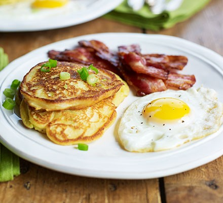

Potato & spring onion breakfast pancakes

Description
This Irish-inspired breakfast, brunch or alternative side dish is based on 'boxty', or potato cakes
Ingredients
- 140g floury potatoes (weighed after peeling), cut into large chunks
- 50g self-raising flour
- ½ tsp bicarbonate of soda
- 3 large eggs
- 5 tbsp milk
- 3 spring onions, finely chopped
- 2 tsp sunflower oil, plus extra if needed
- knob of butter
- 6 rashers streaky bacon (smoked or unsmoked)
Steps
- Put the potatoes in a large pan of salted water and boil until tender. Drain well, tip back into the pan, shake for 1 min over a gentle heat to dry them off, then mash and leave to cool.
- Put the cooled mash in a bowl with the flour and bicarb. Whisk 1 egg with the milk, season, tip into the bowl and whisk until smooth. Stir in the spring onions, reserving some to serve.
- In a non-stick frying pan, heat half the oil and butter until sizzling, then spoon in half the pancake batter to make 3 pancakes. Cook for 1 min or so on each side until browned and set underneath, then flip and cook the other side. Keep warm in the oven while you make 3 more pancakes.
- Wipe out the pan, add the bacon and sizzle until almost crisp. Push to one side and crack in the 2 remaining eggs – with a splash more oil if needed. Fry to your liking, then serve with the pancakes and bacon, sprinkled with the remaining spring onions.